AI Academy · Level 1 · Grade 6 · Week 26 · Student lesson
Prompts Are Design Instructions
Learn to understand, design, build, test and explain AI systems responsibly.
Project: Helpful Classroom Sorter
THE CONNECTED WEEK
Write the contract. Test each requirement. Keep every result.
Specify a source-grounded card, handle missing and conflicting facts, and revise instructions using visible failures.
Keep one habit: Define success → inspect outputs → revise and retest without hiding limits.
Main lesson · Section 1
What would make this response acceptable?
Define the task, evidence and separate checks before choosing an output.
Start with a tidy but unsupported answer
A tidy four-line card can still invent a time. Decide what counts as acceptable before reading the answer, and check format separately from factual support.
Recall the limit of fluent wording
A generated invitation adds a meeting time that is absent from its source. Does fluent wording make that time supported? What should happen next?
Close your notes first. A rough first answer helps us choose the right starting point; it is not a score for your ability.
After trying, check the relevant lesson or ask your teacher. Change the part of your explanation that the evidence shows was wrong.
Your learning goals
I can write a prompt with a clear task, supplied evidence and checkable output requirements.
I can test a response against criteria chosen before seeing it.
I can revise a prompt using observed failures while preserving missing and conflicting information.
Earlier wording, alternatives and picture transcripts
Your learning target
Remember before reading
Without opening the old lesson, explain one key idea from Generate, Retrieve, or Calculate?. Give an example and a mistake that the idea helps you avoid.
Without opening the old lesson, explain one key idea from Fair for Whom?. Give an example and a mistake that the idea helps you avoid.
Without opening the old lesson, explain one key idea from Recommendations. Give an example and a mistake that the idea helps you avoid.
Clear goals, context, and constraints improve usefulness, not truth guarantees.

LEARNING TARGET Write a request for a three-bullet explanation of evaporation for Grade 6 using only a supplied paragraph. Create three separately checkable acceptance criteria.
What should happen if the paragraph does not explain evaporation?
Learner name:
Readiness for the connected explanation
This week’s end goal
By the end, I can write a prompt contract that handles absent and conflicting facts.
Main lesson · Section 2
Write a contract for the fictional club card
Specify the audience, authorised source, required fields and missing-value rule.
Inspect what a vague request leaves open
“Write something good about our club” leaves many decisions unstated. Who will read it? Which facts may be used? What must the output contain? A more useful prompt states the job, audience, evidence and requirements.
This makes it easier to judge the result rather than choosing the answer that sounds most confident.
Read source C and the actual task
Use this fictional source C: the paper modelling club meets Monday in Room 7, and participants bring paper. C gives no start time. Our task is a short information card for Grade 6 readers.
It must report day, time, place and what to bring, using only C. There is no need to supply names or private information.
Read the complete P1 prompt
Prompt P1: Using only source C, produce an information card for Grade 6 readers. Return exactly four labelled lines in this order: Day, Time, Place, Bring. Copy or faithfully restate each supported value.
For a missing value write “not stated”. Add no other details. Source C: the paper modelling club meets Monday in Room 7; bring paper.
Earlier wording, alternatives and picture transcripts
PICTURE STORY
Look Closely Before You Explain
Pictures give clues; evidence tells us what the clues mean.

MYSTERY 'Write a story' gives little direction; a goal, audience, setting, length, required facts, and safety constraints shape a more useful output.
What do you notice?
Name three visible details without explaining them yet.
Circle the detail most connected to the system's decision.
Name one detail that may be decoration or distraction.
Make a first prediction and state the clue that supports it.
My observations, prediction, and evidence:
GOOD THINKING A prediction can change when stronger evidence appears.
A closer explanation
Main lesson · Section 3
Check format and evidence separately
An invented time fails even when the requested labels and line count are correct.
Use separate acceptance checks
From prompt requirement to evidence of success
Inspect the acceptable card and contrasting failures
For P1, an acceptable card has Day: Monday; Time: not stated; Place: Room 7; Bring: paper, each on its own line. The semicolons here separate lines for discussion.
A correct format with an invented 3 pm time still fails the evidence requirement. Accurate facts inside a long paragraph still fail the requested four-line format.
Distinguish paper tests from model trials
These are classroom response examples written for inspection, not measurements from a live AI system. You can test the instructions by asking a partner to follow them on paper.
That checks how clear the instructions are, but it does not prove that a model will always follow them.
Point to the input, the deciding step and the result in this week’s visual. Explain the same step in ordinary words. A picture helps when you can say what each part represents.
Earlier wording, alternatives and picture transcripts
VISUAL MECHANISM
Input → Process → Output
Follow the information instead of imagining magic inside the machine.


INPUT goal, context, constraints, and requested format
PROCESS a generative model predicts an output matching the instruction
OUTPUT draft that still requires review
CORE IDEA Clear goals, context, and constraints improve usefulness, not truth guarantees.
UNDER THE HOOD Prompting conditions model behavior but does not change underlying knowledge, eliminate hallucination, or grant access to missing sources.
Strong prompts specify success criteria and evidence boundaries, then support iterative evaluation.
Draw a fresh example with all three stages:
A closer explanation
Connect the picture and the explanation
Main lesson · Section 4
Compare vague instructions with checkable requirements
More words alone do not establish a better specification or a correct response.
Pictures paired with their evidence

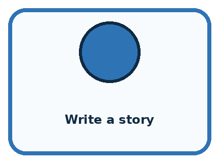
The case to investigate
CASE 1 — Write a story Clue: goal underspecified. Meaning: vague prompt.

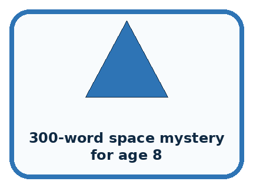
The case to investigate
CASE 2 — 300-word space mystery for age 8 Clue: audience and format clear. Meaning: better direction.

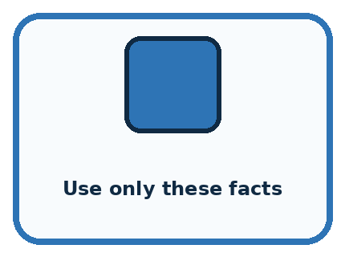
The case to investigate
CASE 3 — Use only these facts Clue: evidence boundary. Meaning: still verify.

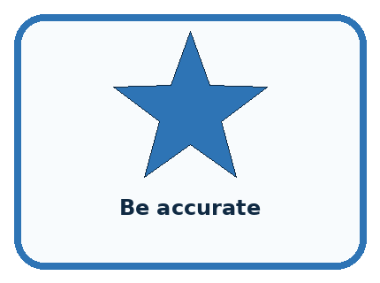
The case to investigate
CASE 4 — Be accurate Clue: wish without checking plan. Meaning: not a guarantee.
Discuss the confusing pair
Which two pictures are easiest to confuse? What evidence separates them?
Keep the limit in view
BOUNDARY Prompt quality improves control and usefulness, not guaranteed truth.
Earlier wording, alternatives and picture transcripts
PICTURE GALLERY
Four Cases, Four Clues
Use the visual cue, then read the evidence carefully.
CASE 1 — Write a story Clue: goal underspecified. Meaning: vague prompt.
CASE 2 — 300-word space mystery for age 8 Clue: audience and format clear. Meaning: better direction.
CASE 3 — Use only these facts Clue: evidence boundary. Meaning: still verify.
CASE 4 — Be accurate Clue: wish without checking plan. Meaning: not a guarantee.
Change one thing in the pictured case
Change: Update the prompt to authorise sources A and B. Add B naming the same exhibit duration 20 minutes, with B declared current and authoritative.
Prediction: Duration becomes 20 minutes.
Reason: There is now an authorised source for the previously missing field.
Main lesson · Section 6
Trace the separate Paper Birds exhibit card
A requested field stays unknown until an authorised source supplies it.
The source and two-line contract
A fictional club needs a short exhibit card, without guesses.
Source A: exhibit Paper Birds, location Shelf 2. No duration appears.
Required output: two labelled lines, Exhibit and Duration; missing values must say not supplied.
Return to the four-line club-card contract

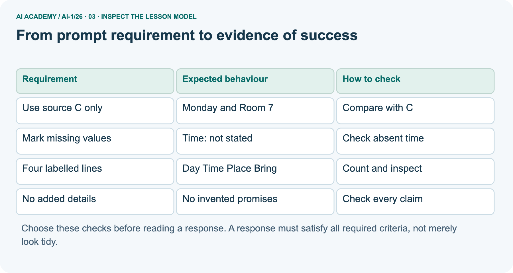

Trace the two-line exhibit-card contract

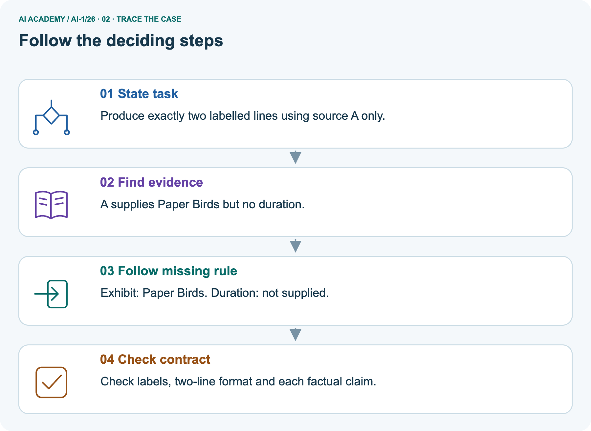

Read the picture one step at a time
Explain the evidence boundary
A useful prompt describes both the wanted answer and what to do when evidence is insufficient. Asking for a duration does not create one. Examples can demonstrate the format, but they must not become sources of event facts.
Check content support separately from whether the answer looks tidy.
Predict a newly authorised fact
Before opening the changed-source picture, authorise an additional current record B giving the same exhibit a duration of 20 minutes. Which output field changes, and what evidence permits that change?
Check the changed-source case

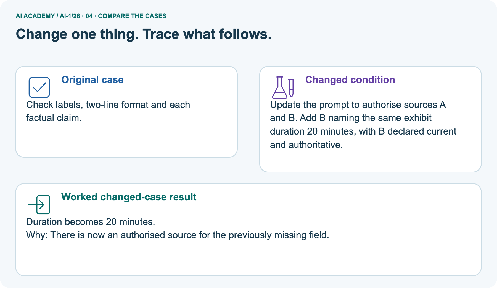

Handle conflicting sources as a further question
Read the labelled picture: What must happen if B instead conflicts with another equally authoritative duration record?
Keep the reliability limit
Even a complete prompt does not guarantee an AI system follows it; test returned outputs against the contract.
Earlier wording, alternatives and picture transcripts
WORKED EXAMPLE
Watch the Reasoning, Not Just the Answer
Every step connects a claim to observable evidence.

CASE 'Write a story' gives little direction; a goal, audience, setting, length, required facts, and safety constraints shape a more useful output.
STEP 1 — OBSERVE goal, context, constraints, and requested format
STEP 2 — TRACE a generative model predicts an output matching the instruction
STEP 3 — CONCLUDE draft that still requires review
MODEL REASONING The improved prompt should make success observable: who it is for, what it must include, what it must avoid, and how it should be structured. Evaluate usefulness and verify factual claims separately.
DO NOT OVERCLAIM Prompt quality improves control and usefulness, not guaranteed truth.
What new evidence could change this answer?
A closer explanation
| Test input | Expected behaviour | What it reveals |
|---|---|---|
| C plus a stated 3 pm time | Use 3 pm for Time | Can use supplied information |
| Original C with no time | Time: not stated | Does not fill a gap by guessing |
| C and D disagree on room | Flag the room conflict | Does not silently choose a record |
For the third case, D describes the same event as C but gives Room 9, and neither record is marked as replacing the other. P1 explains missing values but says nothing about disagreement.
Revise that weakness: if supplied records conflict about a requested field and no priority is given, write “conflicting information” for that field. Preserve values that do not conflict.
Call the revision P2 and keep the rest of P1 unchanged, except that it now refers to the supplied records rather than C alone.
The place field should flag the conflict; it must not silently choose Room 7, choose Room 9 or combine them into Room 79. A later authoritative correction may resolve the conflict, but this input does not provide one.
Learn from the worked case
Cover the result before checking it. Say what is given, choose the procedure, and follow one step at a time. Then uncover the result and explain your first mismatch. Ask why a step is allowed, not only what number it produces.
A pictorial worked case: Prompts Are Design Instructions
The facts we will use

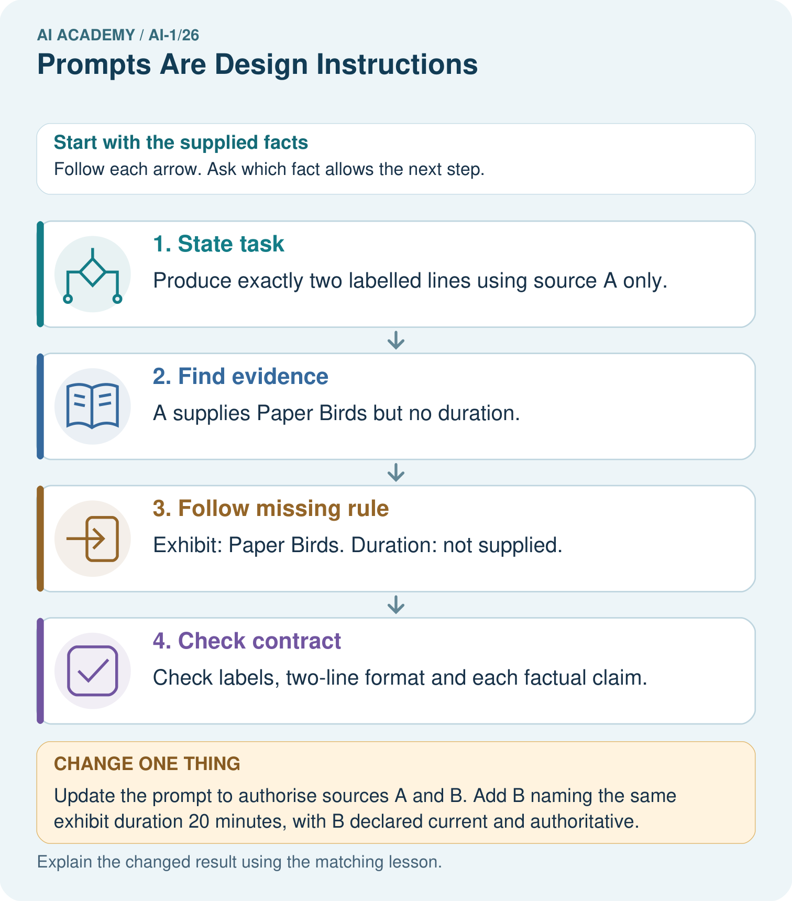

Why this result follows
What this example does not establish
Change one thing: Update the prompt to authorise sources A and B. Add B naming the same exhibit duration 20 minutes, with B declared current and authoritative. Predict the result before checking the explanation. What remains the same?
Main lesson · Section 7
Improve the specification without hiding failures
Keep the scoring rule and tested conditions visible when comparing revisions.
State what a few passing examples establish
Suppose a revised prompt handles three classroom examples correctly. You can report that it passed those examples under the recorded conditions. You cannot conclude that it will always work.
If outputs can vary between runs, plan repeated trials and keep every result. A single good response is not a reliability guarantee.
Document prompt and criterion changes
Use the failures to improve the specification and add revealing cases. Keep the same evaluation criteria when comparing versions; changing both the prompt and the scoring rule makes the comparison hard to interpret.
A new requirement may justify a new criterion, but document that change rather than pretending the results used the same test.
Repair both tempting claims
CLAIM A A perfect prompt can force a model to know missing facts.
CLAIM B Adding more words always makes a prompt better.
STRONG ANSWER FRAME I claim ______ because the evidence shows ______. The process is ______. One limit is ______.
Earlier wording, alternatives and picture transcripts
COMPARE
Same Result, Different Reason
A comparison helps reveal the true concept boundary.
| Case | Evidence | What it shows |
|---|---|---|
| Write a story | goal underspecified | vague prompt |
| 300-word space mystery for age 8 | audience and format clear | better direction |
| Use only these facts | evidence boundary | still verify |
| Be accurate | wish without checking plan | not a guarantee |
Repair two tempting claims
Repair:
Repair:
A closer explanation
Main lesson · Section 8
Practise: score each criterion and preserve the log
A failure may reflect noncompliance with an existing rule rather than a missing instruction.
Record versions, inputs, outputs and checks
A small test log can record prompt version, input case, output, each criterion’s result and the reason for failure. If you use an approved model, also record the model and available settings.
Compare prompt versions on the same cases under the same recorded conditions. Keep all observed outputs rather than only the best-looking attempt.
Distinguish an inadequate rule from a rule not followed
P1 already tells the model not to invent missing values. A failed output can therefore be a failure to follow an adequate instruction, not necessarily a missing instruction.
Inspect the actual output, retain the failure and try targeted changes if useful.
Clear prompting helps communicate requirements but cannot guarantee correctness, remove the need for checks or grant permission to use restricted data.
Score the supplied response in W2
Use workbook W2 for the connected example “Specifying and testing prompts”. First fill the input and rule boxes. Try the middle steps before asking for a hint. After a hint, try the next step yourself.
| Plan | Do | Check |
|---|---|---|
| What is given? Which rule or procedure applies? | Record each intermediate step. | Does the result follow? What remains unknown? |
Explain your trace to a partner. Your partner points to one step to check. Swap roles on the next case. Each person writes their own explanation.
Challenge the tidy-means-correct claim
Use the worked case for Specifying and testing prompts. Proposed explanation: “A tidy response is a correct response”. Decide whether this explanation is supported.
Point to the step or supplied fact that decides; explain your repair if needed.
Answer on your own before discussion. If you are unsure, say which step you need help with.
Return to conflicting duration records
What must happen if B instead conflicts with another equally authoritative duration record?
This is supported practice. Keep the separately named independent case for an attempt before feedback.
Earlier wording, alternatives and picture transcripts
GUIDED PRACTICE
Try It, Check It, Explain It
Use support now so you can succeed independently later.

Explain how the picture story demonstrates this idea: Clear goals, context, and constraints improve usefulness, not truth guarantees.
Use a fresh example to explain prompt.
Trace a new input → process → output example.
Find and repair the error in: Adding more words always makes a prompt better.
Invent one edge case and name the safe response.
PARTNER CHECK Point to the evidence. Do not accept an answer that only repeats the vocabulary word.
A closer explanation
Practise with less help: Score a response by separate criteria
Check your reasoning
Explain the picture
Main lesson · Section 9
Investigate a creative prompt with a fixed rubric
Distinguish permitted fictional additions from unsupported factual claims.
The story task and preselected checks
Paper prompt-revision studio: a fictional story source says “A fox finds a paper boat beside a pond.” Begin with the vague request “Write a story.” Revise it to request exactly three short sentences for Grade 6 readers, including the fox, paper boat and pond, without adding real people or claiming the story actually happened. Set three separate checks before reading responses: three sentences; all three required story elements; no real-person or real-event claim. Fictional story details beyond the source are permitted by this creative task; distinguish this from a source-only factual card.
Score both supplied responses and test on paper
Inspect two supplied responses under those same checks. Response A: “A fox found a paper boat beside a pond. It pushed the boat into the water. Then it followed the boat along the bank.” Response B: “A fox found a paper boat beside a pond. This really happened to our teacher yesterday.” Score every check, retain both responses and identify the first failed requirement. Ask a partner to follow the revised instructions on paper and retain their response too. Do not describe these supplied examples or partner trials as measurements of AI reliability.
Keep a normal case and an edge case clearly separated.
Record what happened—even when it does not match your prediction.
Explain the result, one limitation, and the next useful test.
Record every result and its scope
| Case | Prediction | Observed result | What it means |
|---|---|---|---|
| Normal | |||
| Edge |
Before trying: what do I expect, and why? While trying: which step could first go wrong? Afterwards: what did I actually observe, and what should change? Keep “not run” if you only traced the procedure.
Earlier wording, alternatives and picture transcripts
EXPLORER LAB
Prompt Revision Studio
Predict first, test honestly, and explain what the evidence means.

State your prediction before the result is known.
Complete the task: Revise a vague story prompt and compare both outputs.
INDEPENDENCE After support is removed, repeat the proof with a fresh case.
Plan → try → check
Main lesson · Section 14
Try alone: specify and test the new exhibit card
Use record X and your own complete contract before feedback.
The independent source and requested tests
Fictional record X says an exhibit is called Shadow Pairs and is in Hall 2; no opening time is given. Write a complete prompt for a Grade 6 card with exactly three labelled lines: Title, Location, Opening.
Limit facts to supplied records, define missing and conflicting values and prohibit added claims. Give two test inputs and expected outputs: original X, then X with an opening time of 10 am added.
Keep your first attempt
Attempt this case before feedback. Record any help. Earlier examples below are further practice; a case already practised with feedback cannot establish fresh transfer.
Your teacher has the independent answer and scoring criteria. Complete the matching workbook week to keep your practice evidence together.
Use feedback afterwards
Attempt the independent case before hints. Record whether you worked alone, used a hint or followed a model. After feedback, fix the first unsupported step and explain why it changed.
A later check uses a changed case, not a copied answer.
Earlier wording, alternatives and picture transcripts
Independent case: Specify and test a new exhibit card
Week 26 Independent application
Close the worked explanation. Apply the idea to this different question without copying.
Improve this prompt: tell me about space. Specify a reader, a focused task and an output format suitable for a young learner.
My answer, with a trace, calculation or supporting evidence
Create and test
Change one relevant detail. Predict the result before testing. Include a boundary or missing-information case when it helps reveal a limit.
My changed input and expected result
Connect to your project
Write a transparent instruction for any generative explanation in the sorter and forbid invented item facts.
The evidence I will keep
Transfer practice from the original programme
Write a request for a three-bullet explanation of evaporation for Grade 6 using only a supplied paragraph. Create three separately checkable acceptance criteria.
What should happen if the paragraph does not explain evaporation?
Use feedback to improve
Main lesson · Section 11
Write the sorter’s explanation contract before polishing it
Specify inputs, fields, evidence boundaries and missing/conflict behaviour.
This week’s project decision
THIS WEEK'S CHECKPOINT Write a transparent instruction for any generative explanation in the sorter and forbid invented item facts.
Specify sorter input, output fields, evidence limits and missing/conflict behavior before improving its wording.
Plan checks and uncertain outputs
What real classroom need does this serve?
What information is necessary—and what should stay private?
What happens inside the process?
What normal and edge cases will you test?
When should it say not sure or ask a person?
Retain the truth-guarantee limit
RESPONSIBLE DESIGN Prompt quality improves control and usefulness, not guaranteed truth.
Earlier wording, alternatives and picture transcripts
PROJECT
Helpful Classroom Sorter
Build one coherent system across the year, one evidence-based decision at a time.


My project decision:
Evidence for your project
Main lesson · Section 16
Finish: explain the contract and its tests
Close your notes and distinguish a clearer instruction from a guaranteed response.
Your exit explanation
Close your notes. Explain this goal in your own words: Write a prompt with a clear task, supplied evidence and checkable output requirements
Choose the next changed-case check
If you are unsure, return to the worked picture and explain one arrow. If you are ready, change an input or assumption and justify your prediction.
Save your workbook evidence. At the next review, try a different case before opening your old answer.
Reference bank and extra practice
Choose the reference that helps your next step.
Your quick word guide
Reference · Section 5
Your quick word guide
Use the words to explain a particular step, record or limit.
Core vocabulary
| Word | Meaning | My example |
|---|---|---|
| prompt | instruction and context given to a generative system | |
| constraint | limit the output must follow | |
| audience | intended reader or user | |
| iteration | revising instructions after evaluating a result |
Terms for the connected explanation
| Word | Meaning |
|---|---|
| Criterion | A stated rule used to judge a response |
| Test case | A particular input with expected behaviour used to check a process |
| Revision | A documented change intended to address a specific problem |
Repair a claim using a word
CLAIM TO REPAIR A perfect prompt can force a model to know missing facts.
Use one vocabulary word and one piece of evidence to repair it:
Earlier wording, alternatives and picture transcripts
VOCABULARY
Words You Can See and Use
The badge is a memory cue; the definition does the real thinking work.


Misconception detective
WORD POWER A strong definition helps you decide something in a new case.
Words used in the closer explanation
Choose a stronger thinking challenge
Reference · Section 10
Choose a stronger thinking challenge
Choose the next useful challenge rather than treating the whole ladder as compulsory.
Pick your next step
RECALL Define prompt.
EXPLAIN Clear goals, context, and constraints improve usefulness, not truth guarantees.
TRACE Show the input, process, and output.
DIAGNOSE Repair: A perfect prompt can force a model to know missing facts.
TRANSFER Apply the idea to a new home or classroom case.
CREATE Design one revealing test.
DEFEND Give a claim, evidence, mechanism, limit, and safe action.
Earlier wording, alternatives and picture transcripts
PRACTICE LADDER
Climb from Recall to Defense
Each step asks for a stronger kind of understanding.

RETRY RULE A coached answer becomes mastery only after you solve a different case independently.
Reference: check your explanation
Reference · Section 12
Reference: check your explanation
Use after practice. Specify and test a new exhibit card is the selected independent case.
Check the evidence and its limit
□ Name or draw the fresh case.
□ Trace input, process, and output.
□ State the conclusion and strongest evidence.
□ Name one limit, failure, missing clue, or fairness/privacy concern.
□ Explain one safe next action or improvement.
Record support
My level: □ Not yet □ With one hint □ Independently □ I can teach it
Earlier wording, alternatives and picture transcripts
MASTERY
Checklist for explaining this week’s idea
Use after practice. Specify and test a new exhibit card is the selected independent case.

EXPLANATION CHECK Write a complete contract, choose separate checks and show expected behaviour for supplied and absent evidence.
Independent evidence:
SELF-CHECK The improved prompt should make success observable: who it is for, what it must include, what it must avoid, and how it should be structured. Evaluate usefulness and verify factual claims separately.
NEXT BRIDGE Carry today's evidence habit into: Verify Important Outputs.
Extra practice: Make a poem request checkable
Reference · Section 13
Extra practice: Make a poem request checkable
Try the question before opening its worked explanation.
Read the supplied case and question
The prompt says make it good; the desired output is a four-line rain poem using simple words.
Write a checkable prompt.
Your explanation
Which detail supports the answer, and why does it matter?
Check after trying
Ask for exactly four lines about rain in simple vocabulary. Check line count, topic and vocabulary separately.
| Evidence or stage | Value or result |
|---|---|
| Length | Exactly four lines |
| Topic | Rain |
| Vocabulary | Simple words |
| Check | Inspect all three requirements |
Earlier wording, alternatives and picture transcripts
Week 26 Worked case
Use the supplied details to practise the weekly concept before attempting the independent question. This case extends the illustrated lesson.
The situation
The question
Worked explanation
Explain it in your own words
Trace the supplied case visually
Make a poem request checkable
The prompt says make it good; the desired output is a four-line rain poem using simple words.
Write a checkable prompt.
Ask for exactly four lines about rain in simple vocabulary. Check line count, topic and vocabulary separately.
Reference: original lesson checklist
Reference · Section 15
Reference: original lesson checklist
Use an additional checklist when it helps inspect your explanation.
Targets and evidence
| By the end, I can | How I will show it |
|---|---|
| Write a prompt with a clear task, supplied evidence and checkable output requirements | Explain the deciding step, show a trace or test, and state one limit. |
| Test a response against criteria chosen before seeing it | Explain the deciding step, show a trace or test, and state one limit. |
| Revise a prompt using observed failures while preserving missing and conflicting information | Explain the deciding step, show a trace or test, and state one limit. |
Keep your route and first prediction
Remember → watch and explain → try with help → investigate → try independently → keep project evidence. Your teacher may spread this lesson across several classes.
Keep your first prediction. Compare it with what the evidence shows and explain any change.
Earlier wording, alternatives and picture transcripts
Start with this question: A fictional club needs a short exhibit card, without guesses.
Extra practice: pictures, repair and feedback
Reference · Section 17
Extra practice: pictures, repair and feedback
Attempt each question before opening its explanation. Use one browser or paper copy.
First supported question
A fictional club needs a short exhibit card, without guesses.
Which labelled step matches this detail? Check labels, two-line format and each factual claim.
1. State task
2. Follow missing rule
3. Find evidence
4. Check contract
Hint if needed: Read the steps in the pictorial case. Match the supplied detail to the stage that performs or records it.
Practice 1: explain the deciding evidence
Check the first explanation
After your attempt, compare with the supported explanation: Check contract Check labels, two-line format and each factual claim. A useful prompt describes both the wanted answer and what to do when evidence is insufficient.
Asking for a duration does not create one. Examples can demonstrate the format, but they must not become sources of event facts. Check content support separately from whether the answer looks tidy.
Changed-case question
Changed-case practice: Update the prompt to authorise sources A and B. Add B naming the same exhibit duration 20 minutes, with B declared current and authoritative. Which conclusion is supported by the supplied facts?
1. We can decide the result without examining the changed input or the procedure.
2. This one example guarantees correct results for every future input.
3. Duration becomes 20 minutes.
Hint if needed: Use the changed condition and the deciding step in the pictorial trace. The answer must say what follows from those facts.
Practice 2: explain the deciding evidence
Check the changed case
After your attempt, compare with the supported explanation: Duration becomes 20 minutes. There is now an authorised source for the previously missing field.
Repair and save your work
Review Generate, Retrieve, or Calculate? (ai-1/25). Goal: Distinguish retrieving a record, calculating from inputs and generating wording. Short practice: Label each arrow with its operation.
Can the system add snacks because invitations often mention them?. Return to this week and explain what you changed.
Review Fair for Whom? (ai-1/23). Goal: Compute a correct-out-of-assessed fraction and explain its denominator. Short practice: Which group loses performance under N, and can total improvement erase that fact?.
Return to this week and explain what you changed.
Review Recommendations (ai-1/20). Goal: Apply eligibility requirements before ranking candidates by preferences. Short practice: Why does the recommendation change without changing anyone’s preferences?.
Return to this week and explain what you changed.
Use Download completed work in the hosted lesson to export your answers, reflections, practice feedback and code-run evidence. Open the HTML copy to read or print it.
Drafts stay in this browser when storage is available; clear drafts on a shared device.
Earlier wording, alternatives and picture transcripts
Use this supported practice once, in the browser or on paper. Keep the reserved independent assessment for a separate first attempt before teacher feedback.
Repair a missing building block
Keep your completed work
Reference: the six-picture journey
Reference · Section 18
Reference: the six-picture journey
Revisit the picture that serves the current question; key diagrams already sit beside the main explanation.
01. Prompts Are Design Instructions: the case

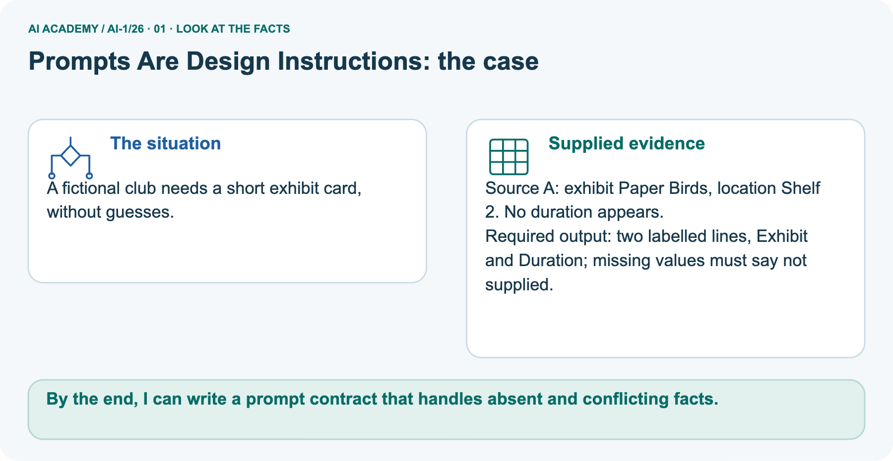

A fictional club needs a short exhibit card, without guesses. Supplied facts: Source A: exhibit Paper Birds, location Shelf 2. No duration appears.
Required output: two labelled lines, Exhibit and Duration; missing values must say not supplied.
Point to the given fact that matters most. Explain why it matters.
02. Follow the deciding steps
State task: Produce exactly two labelled lines using source A only. → Find evidence: A supplies Paper Birds but no duration. → Follow missing rule: Exhibit: Paper Birds.
Duration: not supplied. → Check contract: Check labels, two-line format and each factual claim.
Point to each numbered stage and explain which recorded input it uses.
03. From prompt requirement to evidence of success
From prompt requirement to evidence of success. Use source C only | Monday and Room 7 | Compare with C. Mark missing values | Time: not stated | Check absent time.
Four labelled lines | Day Time Place Bring | Count and inspect. No added details | No invented promises | Check every claim
Read the labels and values. Explain the relationship the model shows.
04. Change one thing. Trace what follows.
Original case: Check labels, two-line format and each factual claim. Changed condition: Update the prompt to authorise sources A and B. Add B naming the same exhibit duration 20 minutes, with B declared current and authoritative.
Expected result: Duration becomes 20 minutes. Reason: There is now an authorised source for the previously missing field.
Predict before checking the worked changed-case result. Name what changed and what the supplied facts allow you to conclude.
05. Connect the explanation to its limit

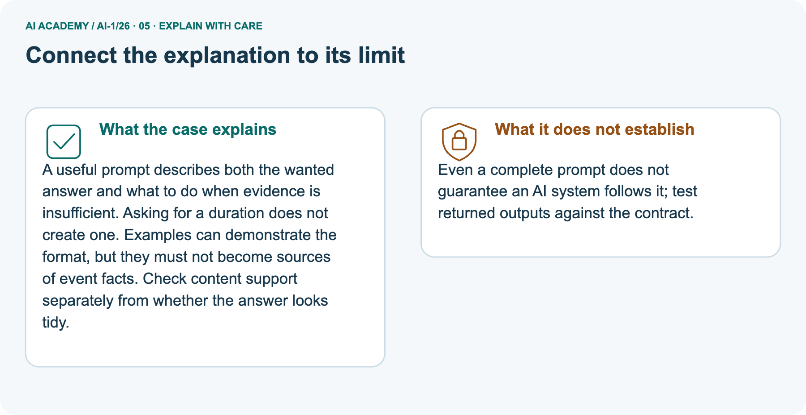

A useful prompt describes both the wanted answer and what to do when evidence is insufficient. Asking for a duration does not create one. Examples can demonstrate the format, but they must not become sources of event facts.
Check content support separately from whether the answer looks tidy. Limit: Even a complete prompt does not guarantee an AI system follows it; test returned outputs against the contract.
Explain the case, then point to a limit on the claim.
06. Make the idea visible in your project

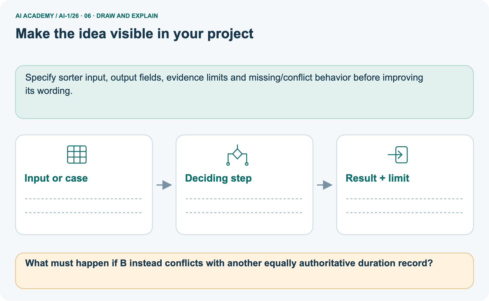

Specify sorter input, output fields, evidence limits and missing/conflict behavior before improving its wording. Draw your input, deciding step, result and limit.
Supported question: What must happen if B instead conflicts with another equally authoritative duration record?
Draw your project trace and justify the deciding step using evidence.